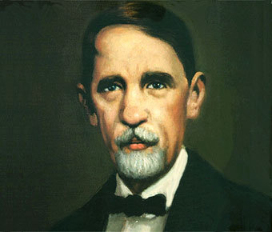
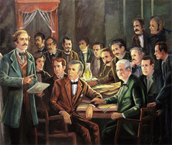
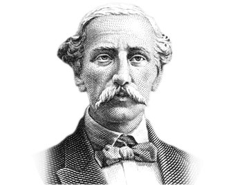

(Santo Domingo, La Española, 1813 - Caracas, Venezuela, 1876) Libertador dominicano. Fundador de la sociedad La Trinitaria y principal ideólogo de la independencia, por dos veces vio Juan Pablo Duarte triunfar la causa por la que luchó toda su vida: en 1844, cuando el país logró la independencia de Haití, y en 1865, cuando, tras la anexión española, se restauró la República Dominicana.
En ninguna de ellas, sin embargo, accedió Duarte al poder, ni obtuvo más reconocimiento que el exilio y el olvido. Tras su fallecimiento, hubo que esperar ocho años antes de que fueran repatriados sus restos, y sólo entonces se le tributaron los honores que merecía un padre de la patria.
Nacido en el seno de una familia española de origen humilde, a la edad de quince años fue enviado por sus padres a Inglaterra vía Nueva York para que completase sus estudios; desde allí pasó a Francia y posteriormente a España.
En Europa, convulsionada en aquellos tiempos por el romanticismo, el liberalismo, el nacionalismo y el socialismo utópico, se impregnó de los ambientes revolucionarios de la época. Juan Pablo Duarte fue testigo de los nuevos regímenes de libertades y derechos surgidos tras la Revolución francesa; mostró especial interés por los cambios producidos en Alemania y en Francia, pero sobre todo por los acontecimientos de España y las reformas que habían intentado introducir las Cortes de Cádiz. De su etapa en España se sabe que residió en Barcelona, donde es posible que estudiase derecho.
Fue entonces cuando comenzó a perfilarse su ideario político, en el cual el nacionalismo y el liberalismo se fundían sobre un fondo romántico: Juan Pablo Duarte entendió que el pueblo dominicano poseía una identidad propia y tenía derecho a la independencia política. Alcanzada ésta, y conforme al pensamiento liberal, la nación debía organizarse sobre la base del institucionalismo de la democracia representativa. En 1833 regresó a su país dispuesto a llevar a la práctica estas ideas.
La antigua isla de La Española, actualmente isla de Santo Domingo, había sido colonizada por los españoles, que, poco interesados en ella, cedieron a finales del siglo XVII la mitad occidental de la isla (el actual Haití) a los franceses. Los movimientos independentistas, iniciados con el siglo XIX, habían sufrido numerosos vaivenes. En 1821, cuando Duarte era todavía un niño, José Núñez de Cáceres proclamó la independencia de la mitad oriental de la isla (actual República Dominicana). Pero el nuevo estado fue ocupado y sometido un año después por Jean-Pierre Boyer, presidente de Haití, que había alcanzado la independencia de Francia muchos años antes.
La TrinitariaA diferencia, pues, de otros libertadores, Juan Pablo Duarte no había de luchar contra una metrópoli europea para lograr la independencia de la antigua parte española de la isla, sino contra la dominación haitiana. Fue en el seno de la clase media urbana donde los planteamientos de Duarte encontraron mayor eco. Pero, por aquel entonces, casi toda la aristocracia y demás grupos dirigentes se hallaban conformes con el régimen haitiano, razón por la cual fue imposible obtener, en los primeros años, su cooperación. A medida que iba ensanchándose el movimiento, Duarte comprendió que se hacía imprescindible crear una organización que, siguiendo el modelo de las sociedades europeas de los Carbonarios, asumiera la responsabilidad de dirigir las actividades. Así surgió la sociedad La Trinitaria (1838), cuyo objeto era liberar al país del dominio de Haití. El lema de esta sociedad fue "Dios, Patria y Libertad". Luego surgió la sociedad La Filantrópica, que realizó una importante labor de propaganda mediante la representación de piezas teatrales. Entretanto, el presidente Jean-Pierre Boyer se había hecho enormemente impopular por la elevación de los impuestos, cuyo destino era un pago exigido por Francia para aceptar la independencia de Haití. En 1843 Juan Pablo Duarte apoyó la revolución que logró derrocar a Boyer. Pero el objetivo de Duarte era la independencia de la parte española de la isla, por lo que continuó su lucha tras la caída del presidente. Perseguido por el nuevo gobierno haitiano, el 2 de agosto de 1843 tuvo que exiliarse en Caracas. |
 |
|  |
La primera republicaPese a ello, las ideas independentistas de Duarte habían calado y siguieron ganando adeptos, y el 27 de febrero de 1844 sus seguidores declararon la independencia del país. Bajo el liderazgo de Francisco del Rosario Sánchez, y tras capitular las guarniciones haitianas en la capital y otras ciudades, la causa independentista triunfó; los haitianos fueron expulsados a la antigua parte francesa de la isla y se configuraron las fronteras actuales entre Haití y la República Dominicana. El 14 de marzo de 1844, Juan Pablo Duarte fue recibido por el nuevo gobierno provisional (la Junta Central Gubernativa) como un héroe nacional y nombrado general del ejército. El triunfo del movimiento independentista impulsó al nuevo presidente haitiano Charles Hérard (1843-1844) a invadir la recién creada República Dominicana con un ejército dividido en dos cuerpos, de los cuales uno penetró por el norte y otro por el sur. Correspondió a Pedro Santana enfrentarse a este último y lograr una resonante victoria en Azua, el 19 de marzo. Así las cosas, la Junta Central Gubernativa ordenó a Duarte que se dirigiera a Baní, con una fuerza militar organizada por Pedro Alejandrino Pina, a fin de llegar a un acuerdo con Pedro Santana sobre la estrategia a seguir contra Haití. Al no ser posible este acuerdo, Duarte requirió de la Junta la necesaria autoridad para actuar por su cuenta. Pero la Junta estaba dominada por Tomás Bobadilla, representante junto con Santana del sector denominado colonialista, que consideraba inviable una república independiente y era partidario de someterse a una metrópoli europea. La Junta respondió ordenando a Juan Pablo Duarte que regresara con sus tropas a la capital: el desacuerdo entre el sector colonialista conservador y el duartismo liberal e independentista se hizo evidente, y acabó con el triunfo del primero. Pedro Santana fue nombrado primer presidente de la República Dominicana (1844-1848) y eliminó la facción rival declarando traidores y enviando al destierro a Juan Pablo Duarte y a sus más significados seguidores, entre ellos Francisco del Rosario Sánchez y Ramón Mella. |
Tras un primer exilio en Hamburgo, Juan Pablo Duarte partió a la isla caribeña de Saint Thomas; luego siguió rumbo a Venezuela, país en el que estuvo doce años. Poco se sabe de la vida de Juan Pablo Duarte durante este período. Es muy probable que no tuviera noticias del decreto de amnistía que, en favor de él y de sus compañeros, había promulgado a principios de septiembre de 1848 el gobierno de Manuel Jimenes (1848-1849), sucesor de Santana. Durante la Primera República, los haitianos intentaron en numerosas ocasiones recuperar el control sobre la parte dominicana de la isla, pero fueron derrotados una y otra vez. El poder político pasó al grupo conservador de hateros y ex funcionarios boyeristas afrancesados, gracias al control de la presidencia de la Junta Central Gubernativa por Tomás Bobadilla y del Ejército Libertador por el general Pedro Santana, quien gobernó dictatorialmente en varios períodos. La alternancia en el poder de Pedro Santana y Buenaventura Báez, hatero y cortador de madera del suroeste del país, más astuto y no menos anexionista que el primero, caracterizó esta etapa.
Pedro Santana ejerció otras dos veces la presidencia: entre 1853 y 1856 y entre 1858 y 1861. Al final de este último mandato, el presidente Santana decidió anexionar el país a España, poniendo fin a la Primera República Dominicana. Pretendía con ello acabar con la amenaza haitiana y perpetuase en el poder, pues aceptó a cambio el cargo de primer gobernador de la Provincia española de Santo Domingo. Estalló entonces la llamada Guerra de Restauración (1863-1865) entre los partidarios de mantener la anexión a España y los independentistas, cuyo objetivo era restaurar la República y que tuvieron en Gregorio Luperón su más capacitado líder militar. Juan Pablo Duarte regresó a su patria el 25 de marzo de 1864 y fue encargado de recorrer América del Sur en busca de ayuda para la causa independentista.
En noviembre se hallaba ya en Venezuela, donde recibiría las noticias del triunfo del gobierno restaurador y del nacimiento de la Segunda República Dominicana. Pero, tras varios presidentes efímeros, el general José María Cabral se hizo cargo del nuevo gobierno, y Juan Pablo Duarte fue nuevamente condenado al ostracismo, esta vez por sus propios partidarios, que no supieron reconocer su aportación a la causa independentista. Enfermo de cuerpo y alma, su vida se fue apagando en su retiro forzoso de Caracas, donde falleció el 15 de julio de 1876.
Corre: Dhanibelreyes@hotmail.com
Telefono: 809-999-3439